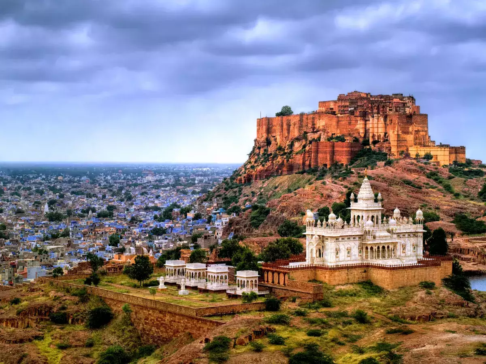

RAJASTHAN

Rajasthan, the largest state in India by area, is a land of vibrant colors, majestic forts, and desert landscapes.
Known as the "Land of Kings," Rajasthan is steeped in history and royalty, with magnificent palaces and forts like Jaipur's
Hawa Mahal, Udaipur's City Palace, and Jodhpur's Mehrangarh Fort showcasing its rich architectural heritage.
The state's desert region, Thar Desert, offers camel safaris and glimpses into traditional Rajasthani culture with folk music,
dance, and crafts. Rajasthan is also famous for its colorful festivals such as Pushkar Camel Fair and
vibrant attire like turbans and ghagras, making it a cultural treasure trove and a delight for travelers exploring India's royal past.